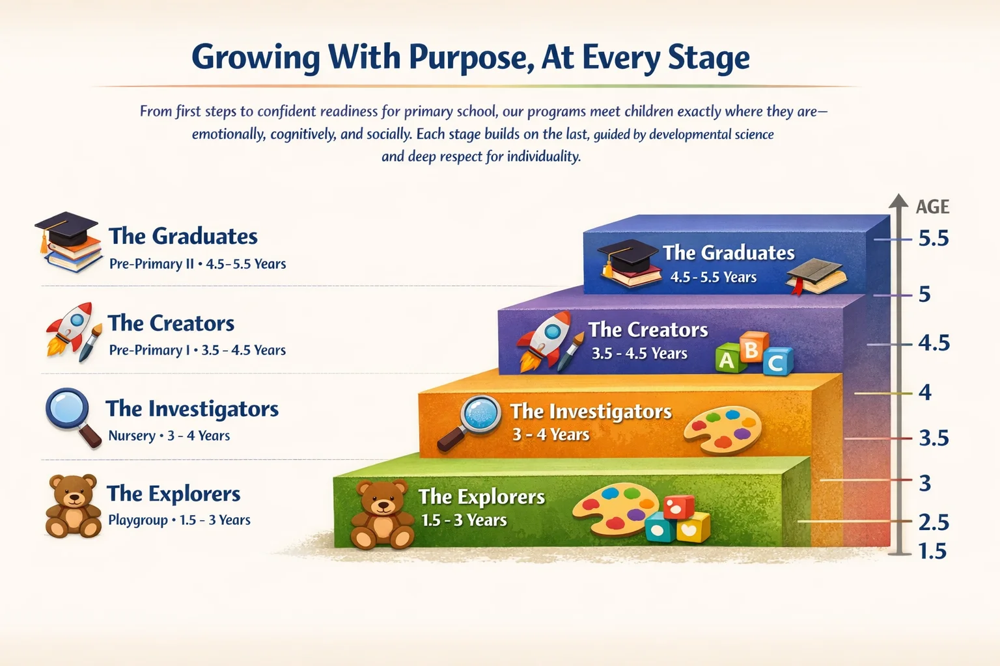

Little Willows Academy
From first steps to confident readiness for primary school, our programs meet children exactly where they are—emotionally, cognitively, and socially. Each stage builds on the last, guided by developmental science and deep respect for individuality.
Each program is carefully designed to support your child's unique developmental journey
Age: 1.5–3 Years | Focus: Sensory discovery, emotional security, social bonding
This is where the journey begins—often with teary goodbyes that soon turn into eager arrivals. The Explorers program creates a warm, nurturing environment where toddlers feel safe to discover the world around them.
Age: 3–4 Years | Focus: Communication, confidence, independence
Now curious and chatty, children ask "Why?" constantly—and we lean into it. The Investigators program channels natural curiosity into structured learning experiences.
Age: 3.5–4.5 Years | Focus: Expanding horizons, structured creativity
Children at this stage are ready for more complex challenges. The Creators program nurtures imagination while building essential academic foundations.
Age: 4.5–5.5 Years | Focus: School readiness with joy
The final stage prepares children for primary school while maintaining the joy of learning. The Graduates program builds confidence and academic readiness.
Our experienced educators can help you choose the perfect program based on your child's age, development, and unique needs.
Schedule a Consultation Download Program Guide1:10 teacher-student ratio ensures personalized attention
Learning through exploration, not memorization
8-pillar framework covering all aspects of growth
Regular assessments and parent communication
Child-safe environments with trained first aid staff
Child-led learning with guidance
Join the Little Willows family and watch your child flourish
Start Application Process Schedule a Visit